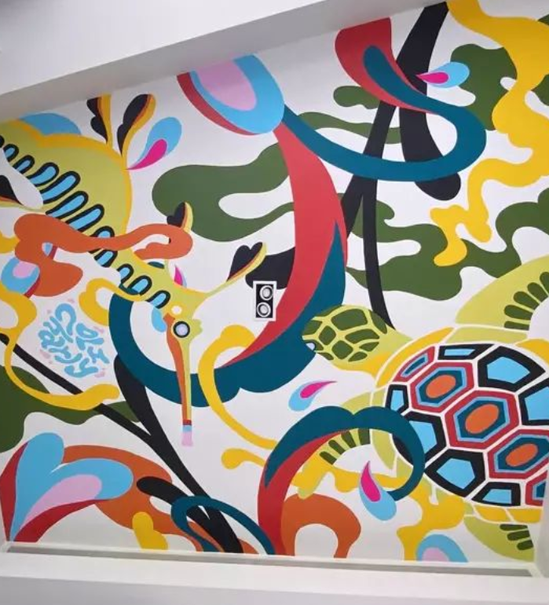
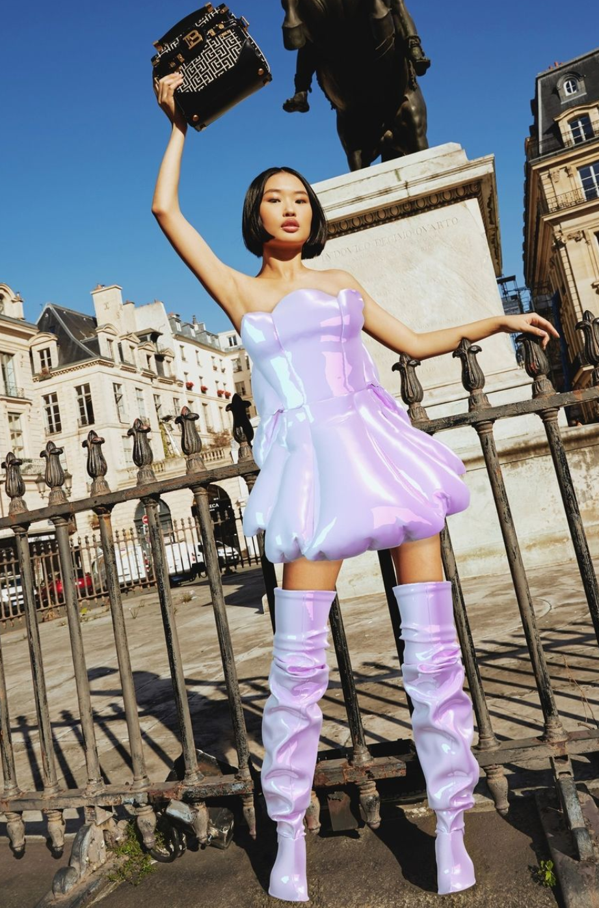
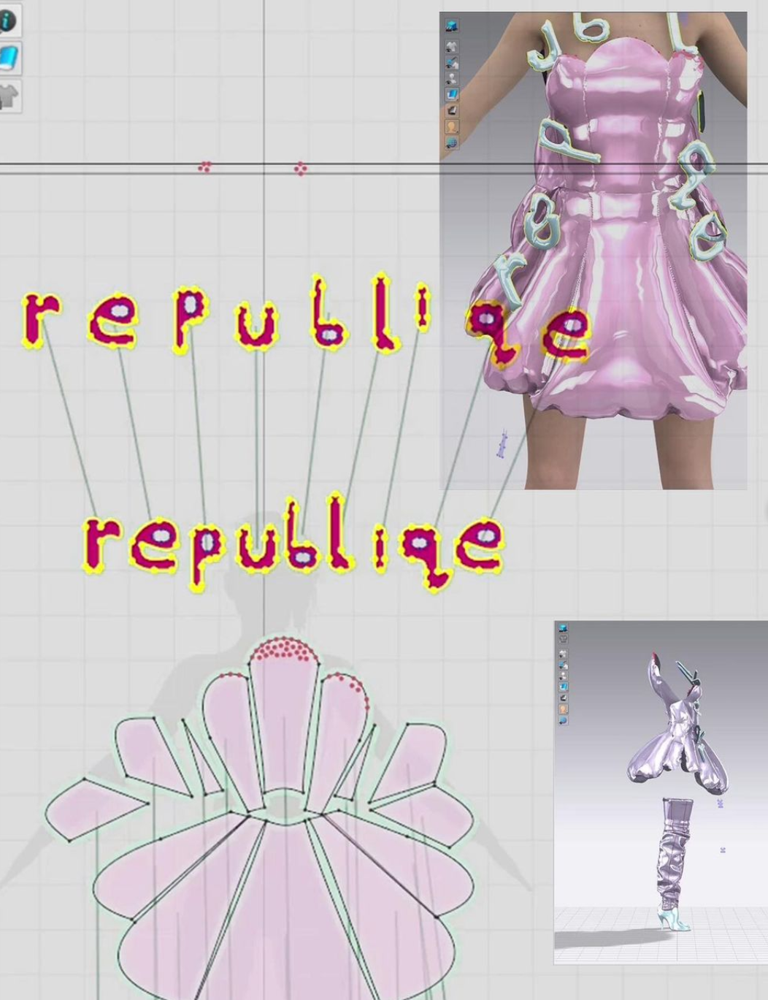

"Exploring the abstraction of symmetry and repetition of shapes within nature - [I] was so excited about fusing these patterns onto wearables." - Aeropalmics

₳e℟δpalmℑc₷
"Aeropalmics captures the different shades of the human condition more gracefully than most.
With her eyes open to the unending sensory magic of the natural world, she produces pieces that oscillate between astounding detail and playful abstractions."
aeropalmics.com
ℛe℘uℬliℚℇ
"republiqe is the worlds first fully digital luxury fast fashion brand that designs unique creations that break the norm, interpreting and creating an extraordinary lifestyle, not only challenging, but redefining an entire category."
republiqe.co


"Inspired by the perennial flower in nature, the rainbow coloured collection aims to put minds in the mood for enjoyment and play. These pieces were created with relatability and accessibility in mind." - Republiqe